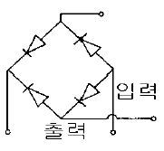
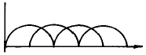
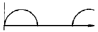
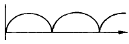
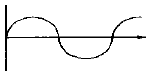

승강기기능사 (2002-01-27 기출문제)
1과목: 승강기개론
1. 펌프의 출력은?
- 압력에 비례하고 토출량에 반비례한다.
- 압력에 반비례하고 토출량에 비례한다.
- 압력과 토출량에 비례한다.
- 압력과 토출량에 반비례한다.
(정답률: 73%)

2. 가이드 레일(guide rail)의 종류는 어떠한 방법으로 나타내는가?
- 길이 1m의 중량으로 표시
- 길이 전체의 레일 중량으로 표시
- 레일 단면의 크기별로 표시
- 가이드 슈(guide shoe) 접촉부의 크기별로 표시
(정답률: 72%)
3. 균형추에 비상정지장치를 설치해야 하는 경우는?
- 정격속도가 360m/min이상인 승객용 엘리베이터
- 정격속도가 400m/min이상인 승객용 엘리베이터
- 피트 밑을 사무실 등의 어떤 용도로 사용 중일 때
- 계약시의 선택사양에 의해서
(정답률: 57%)
4. 균형추와 카(car)와의 균형이 이루어지는 카의 위치는?(단, 카에 균형부하를 실었을 경우임)
- 카가 최하층에 있을 때
- 카가 균형추와 마주치는 위치일 때
- 카가 최상층에 있을 때
- 균형추가 완충기에 닿아 있을 때
(정답률: 68%)
5. 에스컬레이터의 안전장치 중 터미널부와 바닥사이에 물체가 끼인 경우에 에스컬레이터를 정지할 목적으로 핸드레일 마지막 노출부위에 설치한 안전장치는?
- 인렛트스위치
- 전자제동기
- 과전류차단기
- 스탭 이상 검출장치
(정답률: 47%)
6. 유압엘리베이터의 플런져에 관한 설명 중 틀린 것은?
- 상부에는 메탈이 설치되어 있다.
- 메탈 상부에는 패킹이 되어 있어 기름이 새지 않게 한다.
- 플런져 표면은 약간 거칠게 되어 있어 메탈과의 마찰력을 크게 한다.
- 플런져는 먼지나 이물질에 의해 상처받지 않게 주의 하여야 한다.
(정답률: 70%)
7. 교류엘리베이터용 유도전동기의 극수가 4 이고 슬립이 0.03일 때 이 유도전동기의 회전속도는 약 몇 rpm 인가?
- 1656
- 1712
- 1746
- 1856
(정답률: 54%)
8. 승강기의 안전장치에 관한 설명 중 옳지 않은 것은?
- 과부하 감지장치는 정격하중의 1⑤∼110%로 설정 한다.
- 파이날리미트스위치는 리미트스위치전에 설치하여 최상층이나 최하층을 지나쳐서 감속되지 않은 경우 카를 강제적으로 감속 또는 정지시킨다.
- 록 다운정지장치는 240m/min이상의 엘리베이터에 반드시 설치하여야 하며 순간정지식이어야 한다.
- 파킹스위치는 주로 기준층의 승강장에 카스위치를 설치하여 카를 휴지 또는 재가동시킨다.
(정답률: 35%)
9. 승강로의 구조에 대한 설명으로 틀린 것은?
- 외부 공간과 격리되어야 한다.
- 카나 균형추에 접촉하지 않도록 되어야 한다.
- 화재시 승강로를 거쳐 다른 층으로 연소되지 않아야 한다.
- 승강기의 배관설비 이외의 배관도 승강로에 함께 설비되도록 한다.
(정답률: 66%)
10. 에스컬레이터와 윗층 바닥과의 교차하는 협각에 설치 하는 안전물은?
- 셔터연동장치
- 삼각부 안내판
- 핸드레일 안전장치
- 비상정지스위치
(정답률: 66%)
11. 카가 유입완충기에 충돌했을 때 플런져가 하강하고 이에 따라 실린더내의 기름이 좁은 ( )을(를) 통과하면서 생기는 유체저항에 의해 완충작용을 하게 된다. ( )안에 적당한 말은?
- 오리피스봉
- 실린더
- 오일게이지
- 플런져
(정답률: 47%)
12. 일반적으로 승강장의 신호장치로 사용되지 않는 것은?
- 램프식
- 디지털식
- 홀랜턴식
- 버튼식
(정답률: 39%)
13. 한 건물내의 여러 카 중에서 마이크로컴퓨터가 분담하는 기능이 아닌 것은?
- 카스위치 방식
- 운전관리
- 속도지시
- 운행관리
(정답률: 46%)
14. 제동기의 구조 중 브레이크 슈의 특징이 아닌 것은?
- 윤활작용이 좋아야 한다.
- 높은 동작빈도에 잘 견디어야 한다.
- 마찰계수가 안정되어 있어야 한다.
- 라이닝에는 청동철사와 석면사를 넣어야 한다.
(정답률: 41%)
15. 승강기의 조속기란?
- 카의 속도를 검출하는 장치이다.
- 비상정지장치를 뜻한다.
- 균형추의 속도를 검출한다.
- 플런져를 뜻한다.
(정답률: 74%)
2과목: 안전관리
16. 리미트스위치가 작동하지 않을 경우 최상층 또는 최하층을 지나치지 않도록 하기 위해 설치하는 장치는?
- 도어스위치
- 토글스위치
- 덤블러스위치
- 파이널 리미트스위치
(정답률: 82%)
17. 카의 실속도와 지령속도를 비교하여 사이리스터의 점호각을 바꿔 유도전동기의 속도를 제어하는 것은?
- 일단속도제어
- 이단속도제어
- 궤환제어
- VVVF제어
(정답률: 57%)
18. 수평보행기가 이용되지 않는 곳은?
- 공항내의 교통시설
- 터미널의 연락용
- 백화점의 상하층간의 연락용
- 상업시설의 보도
(정답률: 55%)
19. 방폭이란 무엇을 뜻하는가?
- 전기적 아크를 포용할 수 있는 능력
- 가연성 혼합기를 배제할 수 있는 능력
- 인화성 증기를 떠오르게 하는 능력
- 내부 폭발에 견딜 수 있는 능력
(정답률: 76%)
20. 안전표시판의 종류가 아닌 것은?
- 금지표시판
- 거리표시판
- 고압전로 접근표시판
- 무게표시판
(정답률: 48%)
21. 감전되거나 전기화상을 입을 위험이 있는 작업에는 무엇을 구비하여야 하는가?
- 구명구
- 보호구
- 작업모
- 구급용구
(정답률: 81%)
22. 동력전달장치 중 일반적으로 재해가 가장 많은 것은?
- 원동기
- 벨트
- 차축
- 치차
(정답률: 55%)
23. 전기에 의한 발화의 원인으로 볼 수 없는 것은?
- 단락에 의한 발화
- 과전류에 의한 발화
- 접속불량의 과열에 의한 발화
- 용접기의 자동전격방지장치에 의한 발화
(정답률: 68%)
24. 안전관리자의 직무가 아닌 것은?
- 소화 및 피난의 훈련
- 안전에 관한 기록의 작성비치
- 안전작업에 관한 교육 및 훈련
- 근로환경보건에 관한 연구 및 조사
(정답률: 74%)
25. 안전보건표지의 종류가 아닌 것은?
- 금지
- 방향
- 경고
- 안내
(정답률: 65%)
26. 작업장 내부의 색채가 나타내는 표시 중 서로 맞지 않는 것은?
- 황색-주의표시
- 적색-경고표시
- 녹색-안전표시
- 흑백색-대피표시
(정답률: 72%)
27. 승강기의 자체검사자 자격이 있다고 볼 수 없는 자는?
- 자체검사원 양성 이수자
- 해당분야 안전담당자
- 지정검사기관의 검사원
- 사업주
(정답률: 77%)
28. 작업자의 불안전한 상태가 아닌 것은?
- 작업에 대하여 자신을 가지고 있는 경우
- 즉흥적인 판단을 하는 경우
- 복합 동작을 하게 되는 경우
- 작업에 사용되는 공구가 부족한 경우
(정답률: 59%)
29. 에스컬레이터의 검사기준에 관한 사항으로 옳지 않은 것은?
- 디딤판과 상하 승강장의 물림이 충분하여야 한다.
- 구동기의 브레이크는 정격하중을 싣고 상승할 때 디딤판의 정지거리가 0.1∼0.9m정도이어야 한다.
- 승강장에 근접하여 설치한 방화샷터가 닫히기 시작하면 에스컬레이터가 운전 불가능으로 되어야 한다.
- 핸드레일은 하강운전 중 상부의 타는 곳에서 약 15kg의 인력으로 수평으로 당겨도 멈추지 않아야 한다.
(정답률: 42%)
30. 승강장 도어를 손으로 열려고 할 때 약간의 틈이 벌어 진다. 이 틈새와 관련이 있는 것은?
- 클러치
- 클로저
- 세이프티 에지(edge)
- 도어 인터록
(정답률: 43%)
3과목: 승강기보수
31. 유압식 엘리베이터의 점검사항이 아닌 것은?
- 유압파워 유니트의 설치상태
- 유압파워 유니트의 체크밸브의 작동상태
- 핸드레일 구동체인의 마모여부
- 수동하강밸브를 열었을 때의 속도
(정답률: 56%)
32. 에스컬레이터에서 안전회로는 이상이 없으나 운전스위치를 작동시켜도 운전되지 않았을 때는 어느 부분을 점검하는 것이 가장 타당한가?
- 자동회로
- 정지버튼회로
- 과부하계전기
- 핸드레일 구멍의 안전스위치
(정답률: 42%)
33. 승강기의 카와 균형추사이의 여유거리는 보통 몇 mm 이상으로 하는가?
- 15
- 25
- 35
- 45
(정답률: 26%)
34. 조속기의 형태가 아닌 것은?
- GR형(Roll Safety Type)
- GD형(Disk Type)
- GF형(Fly Ball Type)
- GC형(Car Type)
(정답률: 64%)
35. 유압식 승강기의 피트내에서 점검을 실시할 때 주의해야 할 사항으로 틀린 것은?
- 피트내 조명을 점등한 후 들어갈 것
- 피트에 들어갈 때 기름에 미끄러지지 않도록 주의 할 것
- 기계실과 충분한 연락을 취할 것
- 피트에 들어갈 때는 승강로 문을 닫을 것
(정답률: 66%)
36. 도어 인터록스위치를 바르게 조정하는 방법은?
- 스위치가 접촉된 후 록(lock)이 되도록 조정한다.
- 스위치의 접촉과 록이 동시에 되도록 조정한다.
- 록이 된 후 스위치가 접촉되도록 한다.
- 스위치는 관계없이 록만 되도록 조정한다.
(정답률: 43%)
37. 승강기의 승장출입구 바닥 끝부분과 카의 출입구 바닥 끝부분과의 간격은 몇 ㎜ 이하이어야 하는가?
- 30
- 35
- 40
- 45
(정답률: 42%)
38. 직류전동기의 정류자에 줄무늬 손상이 발생하였다. 그 원인으로 볼 수 없는 것은?
- 이물질
- 습기
- 기름때 부착
- 전기자코일 단선
(정답률: 46%)
39. 조속기(GOVERNOR)의 작동상태를 잘못 설명한 것은?
- 카가 상승하거나 하강하는 어떤 방향에서도 정격속도의 1.3배를 초과하기 전에 조속기 스위치가 동작해야 한다.
- 조속기의 스위치는 작동후 자동으로 복귀되어서는 안된다.
- 조속기의 캣치는 일단 동작하고 난후 자동 복귀된다.
- 조속기 로프가 장력을 잃게 되면 전동기의 주회로를 차단시키는 경우도 있다.
(정답률: 54%)
40. 유압엘리베이터의 주요 배관상에 유량제어밸브를 설치하여 유량을 직접 제어하는 회로로서 비교적 정확한 속도 제어가 가능한 유압회로는?
- 미터 인(METER IN)회로
- 블리드 오프(BLEED OFF)회로
- 미터 아웃(METER OUT)회로
- 유압 VVVF 제어회로
(정답률: 50%)
41. 에스컬레이터의 구동 전동기의 용량을 계산할 때 고려하지 않아도 되는 것은?
- 안전장치
- 속도
- 경사각도
- 기계 효율
(정답률: 47%)
42. 피트에서 행하는 검사가 아닌 것은?
- 완충기의 설치상태
- 균형로프 또는 체인의 설치상태
- 이동 케이블의 손상상태
- 도어 클로져의 설치상태
(정답률: 51%)
43. 균형추의 점검 및 보수사항과 거리가 먼 것은?
- 각 웨이트편이 움직이지 않게 고정되어 있는지의 여부
- 각부의 조임상태는 양호한지의 여부
- 가이드 슈가 지나치게 마모된 것은 없는지의 여부
- 과속스위치의 취부가 양호한지의 여부
(정답률: 43%)
44. 에스컬레이터에서 계단식 체인은 일반적으로 어떻게 구성 되어 있는가?
- 좌.우 각 1개씩 있다.
- 좌.우 각 2개씩 있다.
- 좌측에 1개, 우측에 2개 있다.
- 좌측에 2개, 우측에 1개 있다.
(정답률: 67%)
45. 실린더를 검사하는 것 중 해당되지 않는 것은?
- 패킹으로부터 누유된 기름을 제거하는 장치
- 공기 또는 가스의 배출구
- 더스트 와이퍼의 상태
- 압력배관의 고무호스는 여유가 있는지의 상태
(정답률: 42%)
4과목: 기계,전기기초이론
46. 유압용 엘리베이터에 가장 많이 사용하는 펌프는?
- 기어펌프
- 스크류펌프
- 베인펌프
- 피스톨펌프
(정답률: 75%)
47. 그림과 같은 회로에서 입력이 단상 60㎐ 상전원이라면 출력파형은 어느 것인가?





(정답률: 50%)
48. 역률이 가장 좋은 단상 유도전동기는?
- 분상기동형
- 반발기동형
- 콘덴서기동형
- 셰이딩기동형
(정답률: 59%)
49. 질량 1g의 물체에 1㎝/sec2 의 가속도를 주는 힘은?
- 1 N
- 1Ｊ
- 1 erg
- 1 dyne
(정답률: 35%)
50. 유도전동기의 속도 N= 120f(1-S)/P 에서 속도를 변화시키는 방법이 아닌 것은?
- 슬립 S를 변화시키는 방법
- 극수 P를 변화시키는 방법
- 상수 120을 변화시키는 방법
- 주파수 f를 변화시키는 방법
(정답률: 50%)
51. 워엄과 워엄기어의 전동효율을 높이려면?
- 마찰각을 크게, 마찰계수를 작게 한다.
- 마찰각과 마찰계수를 작게 하고 나사각을 크게 한다.
- 마찰각은 작게, 마찰계수와 나사각을 크게 한다.
- 마찰각을 크게 하고 나사각은 작게 한다.
(정답률: 36%)
52. 높이 50mm의 둥근 봉이 압축하중을 받아 0.004의 변형률이 생겼다고 하면, 이 봉의 높이는 몇 mm 인가?
- 49.80
- 49.90
- 49.98
- 49.99
(정답률: 48%)
53. 인장강도가 400kg/cm2인 재료를 사용응력 100kg/cm2로사용하면 안전계수는?
- 1
- 2
- 3
- 4
(정답률: 66%)
54. 실제의 캠이 아닌 것은?
- 원통 캠
- 쌍곡선 캠
- 구형 캠
- 와이퍼 캠
(정답률: 33%)
55. 저항 100Ω에 5A의 전류가 흐르는데 필요한 전압은 몇 V 인가?
- 220
- 300
- 400
- 500
(정답률: 76%)
56. 사인 바의 크기는?
- 전체길이
- 아래면의 길이
- 양쪽 로울러의 중심거리
- 양쪽에 달린 로울러의 원주길이
(정답률: 39%)
57. 1kWh는 몇 Ｊ 인가?
- 860
- 105
- 106
- 3.6× 106
(정답률: 53%)
58. 유도전동기의 속도를 변화시키는 방법이 아닌 것은?
- 슬립 s를 변화시킨다.
- 극수 P를 변화시킨다.
- 주파수 f를 변화시킨다.
- 용량을 변화시킨다.
(정답률: 58%)
59. 운전자가 없는 엘리베이터의 자동제어는?
- 정치제어
- 추종제어
- 프로그래밍제어
- 비율제어
(정답률: 75%)
60. 자기인덕턴스 4H의 코일에 5A의 전류가 흐를 때 축적되는 에너지는 몇 Ｊ인가?
- 50
- 100
- 150
- 200
(정답률: 28%)